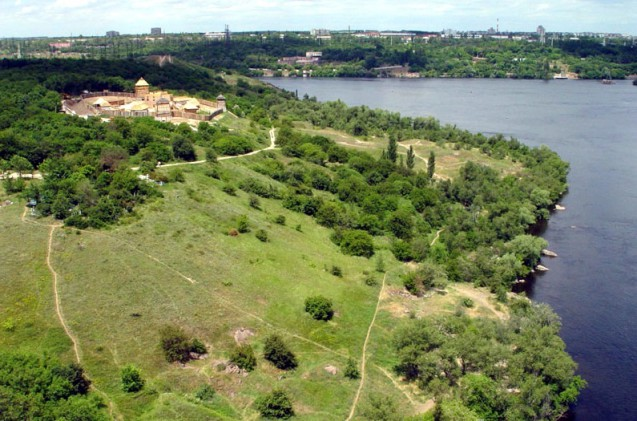

Хортиця
Острів Хортиця – найбільший острів на Дніпрі, унікальність якого – у рідкісному поєднанні на одній території різноманітних природних комплексів, пам’яток геології, культури, історії…
Основу найбільшого острова на Дніпрі (довжина 12, ширина, в середньому, 2,5 км, загальна площа – 2360 га) складають граніти і гнейси, яким близько двох мільярдів років. Природна унікальність Хортиці в тому, що тут у мініатюрі представлені зразки всіх ландшафтних зон України.
Дуже важливою та значущою є історична спадщина цього краю. Саме тут, за однією з версій, навесні 972 р. загинув Київський князь Святослав Ігоревич – одна з найяскравіших постатей давньої історії України. Вважається, що з Хортиці вирушали у козацькі походи проти поляків оспівані українським народом Северин Наливайко, Криштов Косинський, Іван Сулима. Бував тут і гетьман Петро Сагайдачний зі своїм військом. Саме на Хортиці Богдан Хмельницький отримав підтримку реєстрових козаків у часи Визвольної війни у 1648–1654 рр.
Розкопки, проведені археологами заповідника, дають підстави стверджувати, що один із прототипів Запорозької Січі, її предтеча, існувала на Хортиці біля плавневої частини. Саме тут виявлено військове поселення Х–ХІV ст., а окремі знахідки (зброя, кераміка) свідчать про те, що коріння цього унікального об’єкта сягає глибше на кілька століть. У п’яти досліджених „напівземлянках” (археологи називають їх „куренями”) мешкали оборонці не лише Хортиці, а й частини південних рубежів тогочасної української держави.
Сьогодні завершилося будівництво історико-культурного комплексу “Запорозька Січ”, яке розпочалося у 2004 р. на свято Покрови, у День українського козацтва.
Комплекс „Скіфський стан” нараховує одинадцять курганів – „живих”, реконструйованих та стилізованих. Кургани (найстаріший із них споруджений представниками культур доби бронзи у ІІІ тисячолітті до н.е., а наймолодший – скіфами у ІІІ ст. до н.е.) розташовувалися кількома групами на узбіччі так званого Скіфського шляху, що колись проходив уздовж Хортиці її серединною, підвищеною частиною. Сьогодні на курганах установлено стародавні скульптури, людиноподібні стели, гармати, ступи, корита, жорна, скульптури, кам’яні стовпи та хрести – знайдені у навколишніх селах і привезені на Хортицю.
У Музеї історії запорозького козацтва, відкритому на території заповідника у 1983 р., зібрано понад 30 тис. експонатів, які охоплюють історичний період від палеоліту до ХІХ ст. н. е. Експозицію доповнюють чотири діорами. Переважна більшість експонатів знайдена саме на Хортиці. Це – кам’яні знаряддя праці, кераміка, зброя, якорі, фрагменти старовинних човнів, стовбур дуба, який був зрубаний кілька тисячоліть тому і стільки ж пролежав на Дніпровському дні.
Улітку 1843 р. 29-річний Тарас Шевченко, подорожуючи Україною, побував і на Хортиці. У травні 2005 р. з допомогою краєзнавців визначено маршрут, яким ходив по Хортиці поет, та оздоблено його сімома гранітними брилами. На брилах висічені рядки із творів Великого Кобзаря, де згадується Хортиця і „Великий луг запорозький”. Таким чином виник меморіально-туристичний маршрут „Тарасова стежка”, який полюбився запорожцям та гостям Хортиці.
На замітку Хортиця – найбільший острів на Дніпрі, розташований у районі міста Запоріжжя, нижче Дніпрогесу. Відстань від Києва до Запоріжжя – 568 км.
Довідково Адреса: 69017, м. Запоріжжя, о. Хортиця. Тел.: (0612) 52-73-17, (0612) 52-51-88. Час роботи: з 10:00 до 17:00, Пн – вихідний.